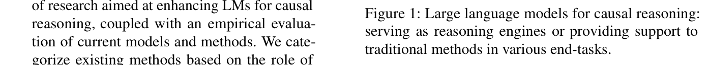
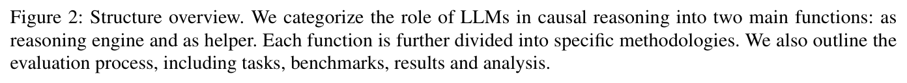
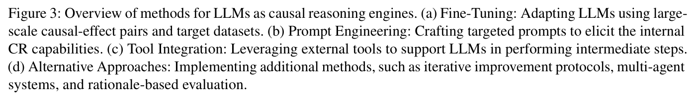
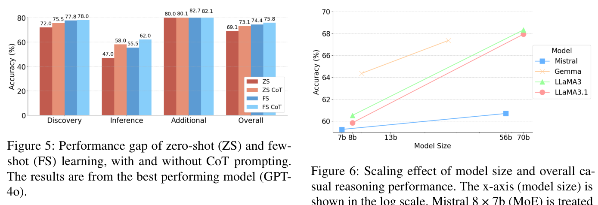
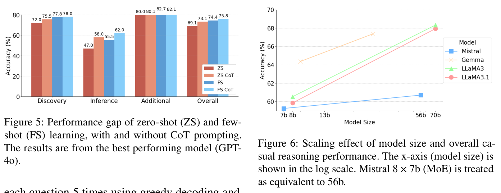
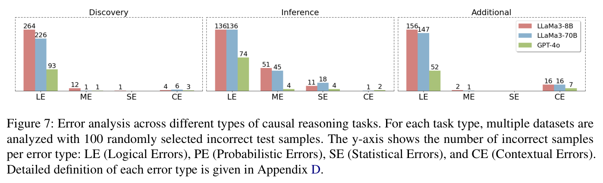
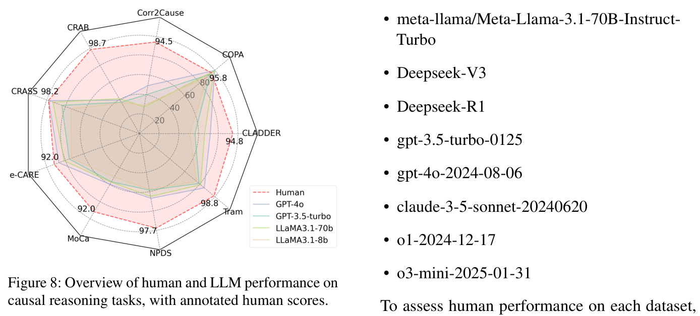

CausalEval
Towards Better Causal Reasoning in Language Models
Towards Better Causal Reasoning in Language Models
Causal reasoning is a crucial aspect of intelligence, essential for problem-solving, decision-making, and understanding the world. We introduce CausalEval, a comprehensive review of research aimed at enhancing LMs for causal reasoning, coupled with an empirical evaluation of current models and methods. We categorize existing methods based on the role of LMs: either as reasoning engines or as helpers providing knowledge or data to traditional CR methods.







@inproceedings{yu2025causaleval,
title={CausalEval: Towards Better Causal Reasoning in Language Models},
author={Yu, Longxuan and Chen, Delin and Xiong, Siheng and Wu, Qingyang and Liu, Qingzhen and Li, Dawei and Chen, Zhikai and Liu, Xiaoze and Pan, Liangming},
booktitle={NAACL},
year={2025}
}